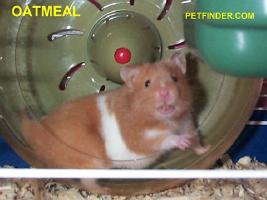
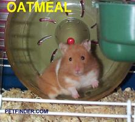

| Hi, my name is Oatmeal ! I was brought to an animal shelter in August 2001; my owner had too many hamsters. When I was brought in, I was about six weeks old. The shelter is very big (THS) and I was in quarantine for a while. Once I got into the adoption area, there were rabbits, gerbils, and cats in my area of the shelter. The shelter takes in animals for a city of about 3,000,000 people. I was there for a long time. My life is short but I spent months in the shelter. I am nocturnal and had to deal with lots of strange people in the daytime. I was very scared. After a while, my picture was posted on petfinder.com. It was not a good likeness, as I was sleepy. My cage was small, my home / nest was too small and I had no wheel. The shelter tried to help but has its limitations. Some hammie lovers saw my picture. Marlene and Mike contacted the shelter, and confirmed I was safe and still there. They came and saw me on November 16, 2001 in my cage. They seemed like nice people and they smelled like hammies and good foods, so I let them take me to their home. The cage they brought to put me in was really big, bigger than my home in the shelter. I heard something about "paper work," don't know what that means, but I love to shred toilet paper for nesting material. I am really scared of people. I saw thousands in the shelter, but these people smell good. They give me food and let me go into a "ball." I think I like it here. I am slowly starting to be friends with these humans, but I am still nervous. I don't run and hide any more, and I come out into the ball in the evening with Marlene, and now in the early morning with Mike. I have lots of fun running around with the other hammies in our balls. I love my life here! Oatmeal |
| Oatmeal by Mike and Marlene |
|  |
|  |